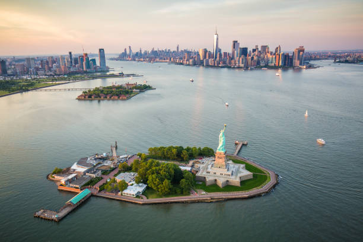
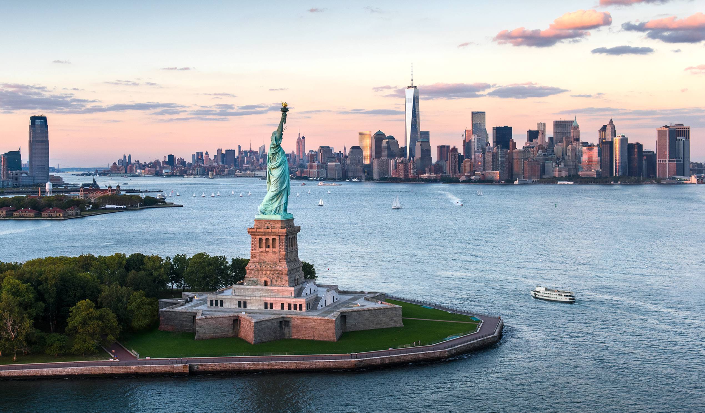

La statue de la Liberté est une sculpture monumentale érigée sur Liberty Island, une petite île à l'entrée du port de New-York (NY, Etats-Unis). Son nom officiel est "La liberté éclairant le monde". C'est l'une des sculptures les plus connues au monde, elle a été offerte par la France aux Etats-Unis pour célébrer le centenaire de la déclaration d'indépendance.
La statue de la Liberté est sans aucun doute la statue monumentale la plus connue au Monde. Elle a un rayonnement international, et quelle que soit la personne avec qui vous dialoguez, elle saura la reconnaître rien qu'à sa description.


Par où commencer pour décrire cette statue ? Peut-être par sa beauté générale, qui porte plus sur l'incarnation virginale de la liberté que sur des critères purement physiques qui sont forcément dépendants de la civilisation d'où provient le contemplateur.
La "Liberté" possède un joli nez, héritage respectable du classicisme grec. D'une manière générale, cette monumentale coproduction franco-américaine tient plus de la déesse Athéna au regard sérieux, que de la passionaria aux seins nus, brandissant le drapeau tricolore, qui valut à son créateur Eugène Delacroix une place au Louvre, aujourd'hui au Louvre Lens, tandis qu'elle-même était reproduite à des millions d'exemplaires sur les billets de banque français.
Sa position géographique lui confère un rayonnement international. Issue du génie français, elle fut placée à l'entrée du port de New-York, probablement la plus grande ouverture au monde du plus grand pays occidental. Et rayonnement est le mot juste, puisqu'elle fut un phare durant ses premières année
Se dressant fièrement sur Liberty Island, dans le port de New York, immédiatement au large de la pointe sud de Manhattan à New York, la statue de la Liberté est l’un des monuments les plus emblématiques des États-Unis et un symbole inaltérable de liberté.
La statue de la Liberté est l’un des monuments les plus emblématiques des États-Unis et un symbole inaltérable de liberté.